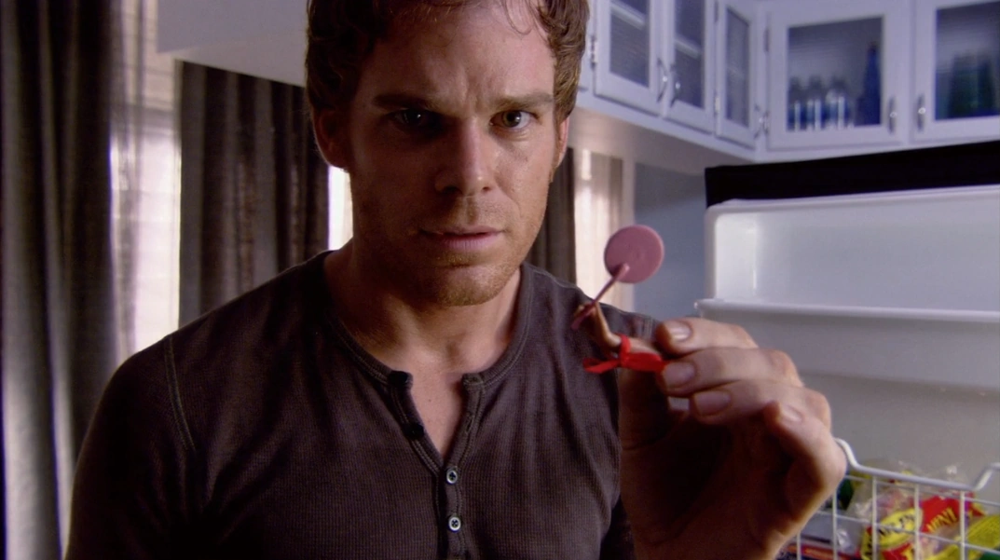

Episodes
season 1

1.Dexter
Dexter Morgan, a blood spatter analyst with a dark secret, hunts Miami’s criminals at night. He discovers a mysterious killer who leaves no blood and senses a strange connection.
Tonight's the night, and Dexter Morgan, a blood-spatter analyst for Miami Metro Police, secretly hunts down criminals who have escaped justice, all while struggling to maintain the facade of a normal life.
Dexter Morgan, a blood spatter analyst with a dark secret, hunts Miami’s criminals at night. He discovers a mysterious killer who leaves no blood and senses a strange connection.